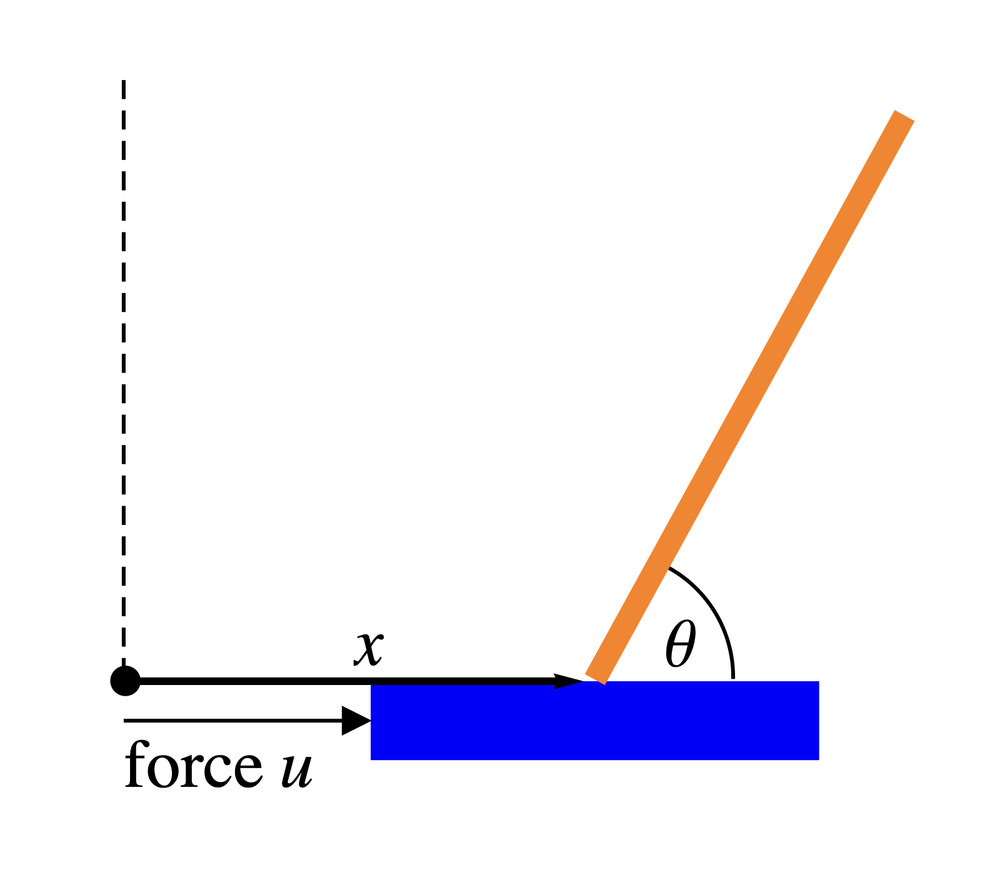

By repeating the above analysis in a careful manner for the general LQP problem in arbitrary dimension discussed at the beginning of this section, one can derive the solution for that general case. For the LQP problem with a finite horizon, the gain matrix $K(T)$ from (47) is expressed as a matrix product
where $V(T)$ is a matrix related to the optimal cost function $J_*(\mathbf{w},T)$ (defined analogously to $I_*(w,T)$) by
Furthermore, $V$ satisfies the matrix differential equation (also referred to as the Ricatti equation)
with boundary condition $V(0) = 0$ (the zero matrix). For an infinite time horizon, we again look for stationary solutions, which leads to the algebraic Ricatti equation
which is a system of quadratic equations in the entries of $V$. The (constant) gain matrix $K$ is again given by
While these equations may seem intimidating at first sight, they are easy to solve numerically on a computer. Symbolic math software applications such as $\texttt{Mathematica}$ even contain specialized packages for control theory that make the process of deriving optimal LQP control rules highly automated and quite simple in practice, as the next example demonstrates.
The inverted pendulum with cart: LQP optimal control with $\texttt{Mathematica}$The controlled inverted pendulum with cart is a dynamical system with 2 degrees of freedom $\theta=\theta(t)$ (representing the angle of the pendulum relative to the positive $x$-axis) and $x=x(t)$ (representing the displacement of the cart along the $x$-axis), satisfying the equations of motion (1)
where $u$ is the control variable representing a control force being applied to the cart --- see Figure 19.

The system can be thought of in the usual way as a system of 4 coupled first-order ODEs in the variables $\theta, \dot{\theta}, x, \dot{x}$. The goal of the control problem is to bring the system to a stable equilibrium at $(x,\dot{x},\theta,\dot{\theta}) = (0,0,\pi/2,0)$. In $\texttt{Mathematica}$, we type the following commands:
The second command causes $\texttt{Mathematica}$ to linearize the equations of motion around the desired rest point. The output is an augmented matrix of the form $\left( A\,|\,B\right)$ where $A, B$ are the two matrices in the resulting linearized equation (45). This brings the problem to the familiar setup of LQP optimal control which we discussed above. We now type:
This asks $\texttt{Mathematica}$ to compute the gain matrix $K$ (in this case a vector with 4 coordinates) associated with the cost functional (46) (in the case $t_2=\infty$ of an infinite time horizon), where the quadratic forms $P, Q$ are defined by
Using the gain matrix computed by $\texttt{Mathematica}$, we see that the solution to the optimal control problem we defined is given by the feedback rule
(1) This example is based on a blog post written by Andrew Moylan on the website of Wolfram Research (maker of the $\texttt{Mathematica}$ software); see the link: http://blog.wolfram.com/2011/01/19/stabilized-inverted-pendulum/